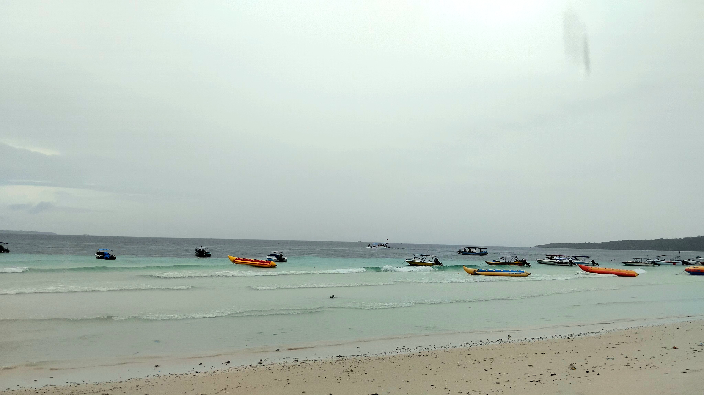

.png)
What A View of The Beach Brings

I was sitting at the beach with my friends. It was raining and I wasn’t into getting myself wet, especially by the sea water. Yet, I was having my moment too—just by staring at the beach. The shoreline, sea water, the waves, the view of the horizon, even an island I see from a far were like silently talking to me.
First, the beach was calling back my memory, taking me back to the previous times I was at a beach. Suddenly, what I was seeing slightly changed. The glimpse of older memories of a beach appeared in front of my eyes. Some friends of mine were riding the banana and donut boat. Watching them reminded me of that time years ago. I was at another beach with my big extended family and some of them rode the same types of boats as well. I recall one or some of them struggled to get into the boat, just like how my friend just struggled. It’s almost like the moment was being repeated in a slightly different way.
Then, I saw people enjoying their time at the beach; trying to float, playing with the sand, picking pieces of corals and shells. That reminded me lots of thing too. When I was more of a little kid, I didn’t care about being wet so I had a moment of trying to float at the beach too. I also have enjoyed playing with the sand and obviously have picked seashells and corals. I even keep a piece of shell from a beach in a small box. All of those moments were being replayed vaguely in my mind while I was staring at the beach.
Besides recalling memories, the beach also reminds me of how beautiful this world is. The small waves and the iconic sound they make are a very impressive combination. Staring at the long line of the horizon reminded me of Moana. Haha, just kidding, that’s not what I meant. The horizon seemed to tell me how wide the world and universe is. Behind it is the other part of the earth and a lot is going on there. Underneath, it’s hiding the whole story of the ocean, while above the horizon is the outer part of the earth which goes further to meet the space. These stuffs, again and again, made me wonderstruck by this whole universe.
Last but not least, staring at the beach itself brought me back to the other times I was staring at a beach back then. It made me think of what was on my mind back then and even rethink about it. It felt like a loop—thinking about what I had thought before, then rethinking those thoughts. Haha, even I got confused—but somehow, it made sense in that moment. But I’m serious, I kind of thought that way at the beach. One of the main thoughts I had when staring at a beach was: there are lots going on behind that horizon. Other people in the other parts of the earth are busy doing, thinking, and feeling different matters. Then it led me to question, “Is there one out there thinking of me?”